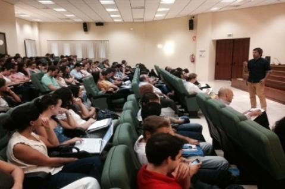

## -*- coding: utf-8 -*-

<%include file="cabecera.html"/>
<%include file="menu.html"/>

	<section id="cuerpo">
		<h1> Noticias nacionales: </h1>
		<h2> La odisea de montar una empresa en España, paso a paso </h2>
		<h4> Fuente: <a href="http://noticias.lainformacion.com/espana/la-odisea-de-montar-una-empresa-en-espana-paso-a-paso_XMair2OmrpiLxN59QVRMR3/"> http://noticias.lainformacion.com/espana/la-odisea-de-montar-una-empresa-en-espana-paso-a-paso_XMair2OmrpiLxN59QVRMR3/ </a> <h4>
		
		<p>  El informe ‘Doing Business’, que cada año publica el Banco Mundial y que califica a 189 países del mundo en cuanto a su facilidad para hacer negocios ha situado a España en un lamentable puesto 142 en cuanto a sus condiciones para montar una empresa, lo que nos deja por detrás de países con tanta tradición empresarial como Túnez o Ruanda. Según el ranking de ‘Doing Business’, en España se tarda 23 días en comenzar un negocio frente a los 11 de media que hay en la OCDE, tenemos que realizar diez trámites – frente a los cinco de media en la OCDE – y nos cuesta el 4,7% de nuestra renta per cápita, frente al 3,6% de la renta que supone la media OCDE. Esto quiere decir que si la renta per cápita en España es de unos 22.400 euros, el gasto medio para el inicio de una actividad empresarial es de 1.052 euros, frente a los 806 euros que nos costaría si aplicásemos el baremo medio que usa la OCDE (3,6%). </p>
		<p> Por hacer una comparativa con los países de nuestro entorno, en Francia se realizan cinco procedimientos en un tiempo medio de 6,5 días y con un coste del 0,9% de su renta per cápita. Aún teniendo en cuenta que su renta per cápita es superior a la española y está en torno a los 31.100 euros, el gasto medio de un francés sería de 280 euros. Un italiano realizaría seis trámites en seis días, pero pagaría el 14,2% de su renta, en torno a 3.650 euros. Mientras que un alemán tardaría 14 días, realizaría nueve procedimientos y le costaría el 4,7% de su renta, que en su caso se elevaría hasta los 1.532 euros. Portugal sería en este sentido la gran referencia de los países más próximos a España, puesto que tardan dos días y medio en hacer tres procedimientos y les cuesta el 2,4% de su renta, esto es, en torno a 375 euros. </p>
	</section>

<%include file="pie.html"/>
